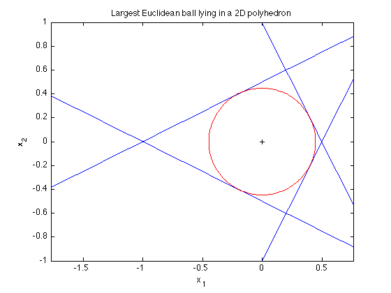

% Boyd & Vandenberghe, "Convex Optimization" % Joëlle Skaf - 08/16/05 % (a figure is generated) % % The goal is to find the largest Euclidean ball (i.e. its center and % radius) that lies in a polyhedron described by linear inequalites in this % fashion: P = {x : a_i'*x <= b_i, i=1,...,m} where x is in R^2 % Generate the input data a1 = [ 2; 1]; a2 = [ 2; -1]; a3 = [-1; 2]; a4 = [-1; -2]; b = ones(4,1); % Create and solve the model cvx_begin variable r(1) variable x_c(2) maximize ( r ) a1'*x_c + r*norm(a1,2) <= b(1); a2'*x_c + r*norm(a2,2) <= b(2); a3'*x_c + r*norm(a3,2) <= b(3); a4'*x_c + r*norm(a4,2) <= b(4); cvx_end % Generate the figure x = linspace(-2,2); theta = 0:pi/100:2*pi; plot( x, -x*a1(1)./a1(2) + b(1)./a1(2),'b-'); hold on plot( x, -x*a2(1)./a2(2) + b(2)./a2(2),'b-'); plot( x, -x*a3(1)./a3(2) + b(3)./a3(2),'b-'); plot( x, -x*a4(1)./a4(2) + b(4)./a4(2),'b-'); plot( x_c(1) + r*cos(theta), x_c(2) + r*sin(theta), 'r'); plot(x_c(1),x_c(2),'k+') xlabel('x_1') ylabel('x_2') title('Largest Euclidean ball lying in a 2D polyhedron'); axis([-1 1 -1 1]) axis equal
Calling sedumi: 4 variables, 3 equality constraints For improved efficiency, sedumi is solving the dual problem. ------------------------------------------------------------ SeDuMi 1.21 by AdvOL, 2005-2008 and Jos F. Sturm, 1998-2003. Alg = 2: xz-corrector, Adaptive Step-Differentiation, theta = 0.250, beta = 0.500 eqs m = 3, order n = 5, dim = 5, blocks = 1 nnz(A) = 12 + 0, nnz(ADA) = 9, nnz(L) = 6 it : b*y gap delta rate t/tP* t/tD* feas cg cg prec 0 : 4.47E+01 0.000 1 : -6.25E-02 1.08E+01 0.000 0.2426 0.9000 0.9000 1.41 1 1 4.0E+00 2 : 4.05E-01 2.36E+00 0.000 0.2180 0.9000 0.9000 2.92 1 1 3.7E-01 3 : 4.46E-01 6.75E-02 0.000 0.0286 0.9900 0.9900 1.38 1 1 8.6E-03 4 : 4.47E-01 2.06E-06 0.070 0.0000 1.0000 1.0000 1.01 1 1 iter seconds digits c*x b*y 4 0.0 Inf 4.4721359550e-01 4.4721359550e-01 |Ax-b| = 5.4e-17, [Ay-c]_+ = 2.2E-16, |x|= 2.4e-01, |y|= 4.5e-01 Detailed timing (sec) Pre IPM Post 0.000E+00 3.000E-02 0.000E+00 Max-norms: ||b||=1, ||c|| = 1, Cholesky |add|=0, |skip| = 0, ||L.L|| = 1. ------------------------------------------------------------ Status: Solved Optimal value (cvx_optval): +0.447214
